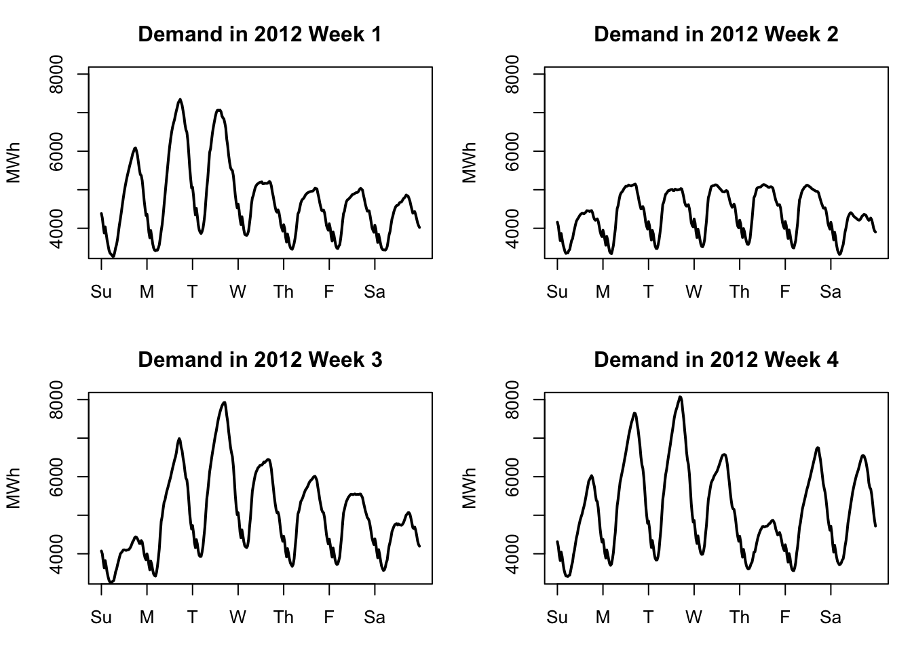
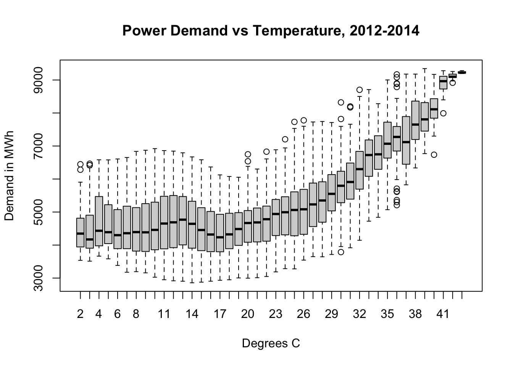
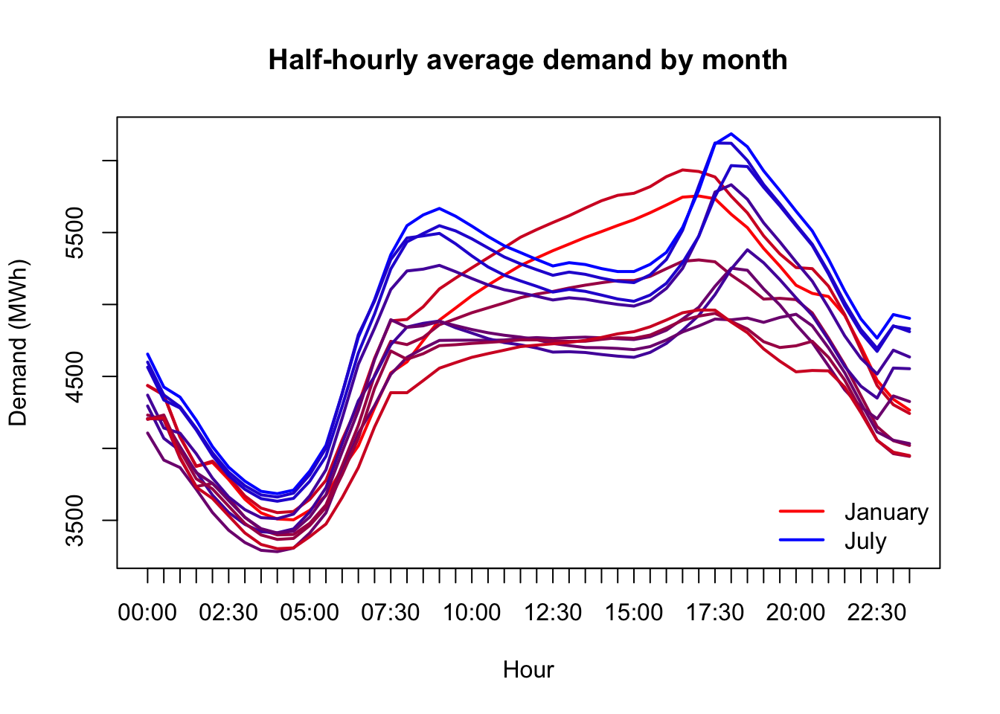
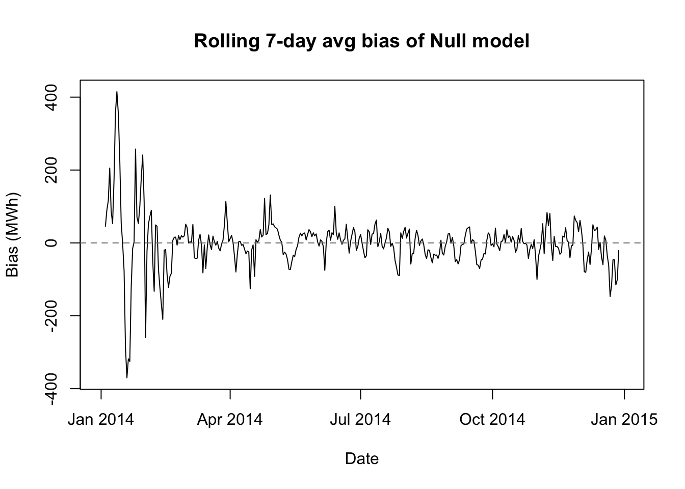
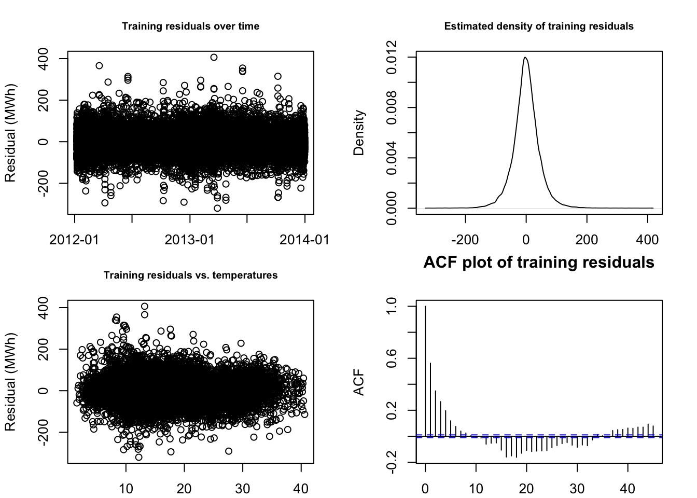
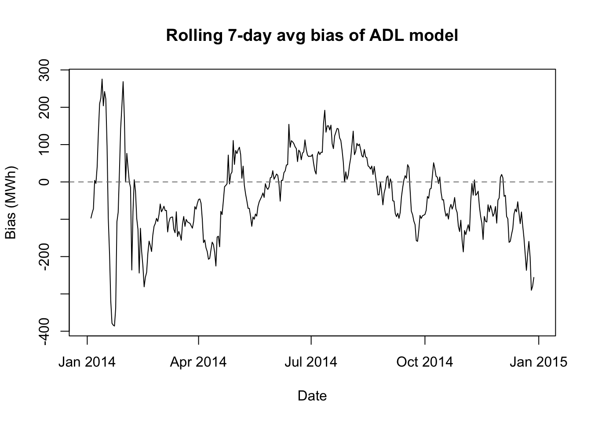
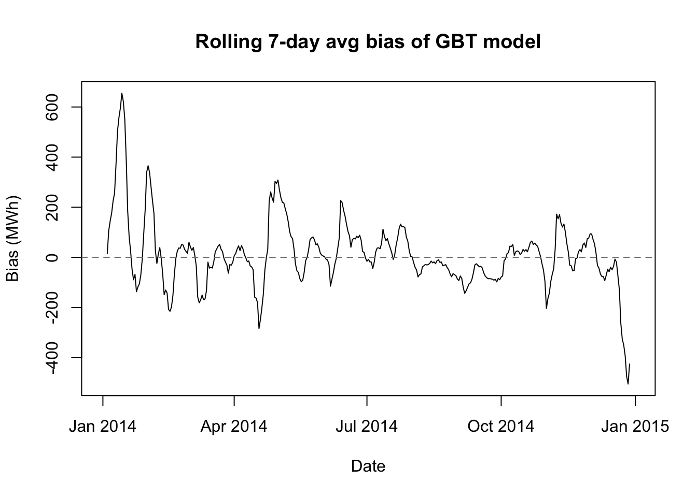
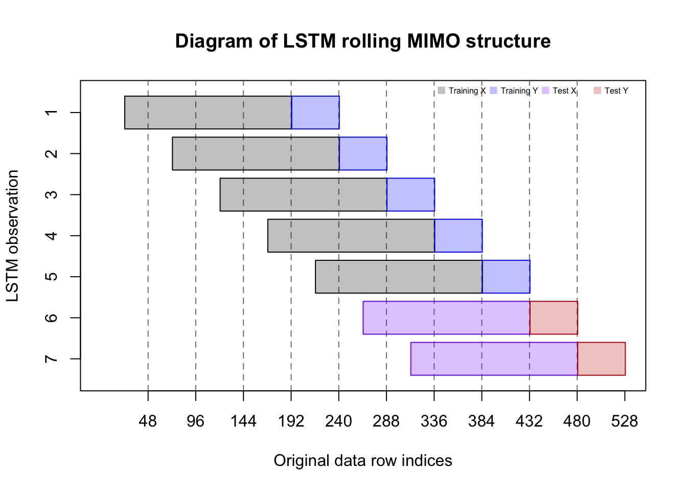
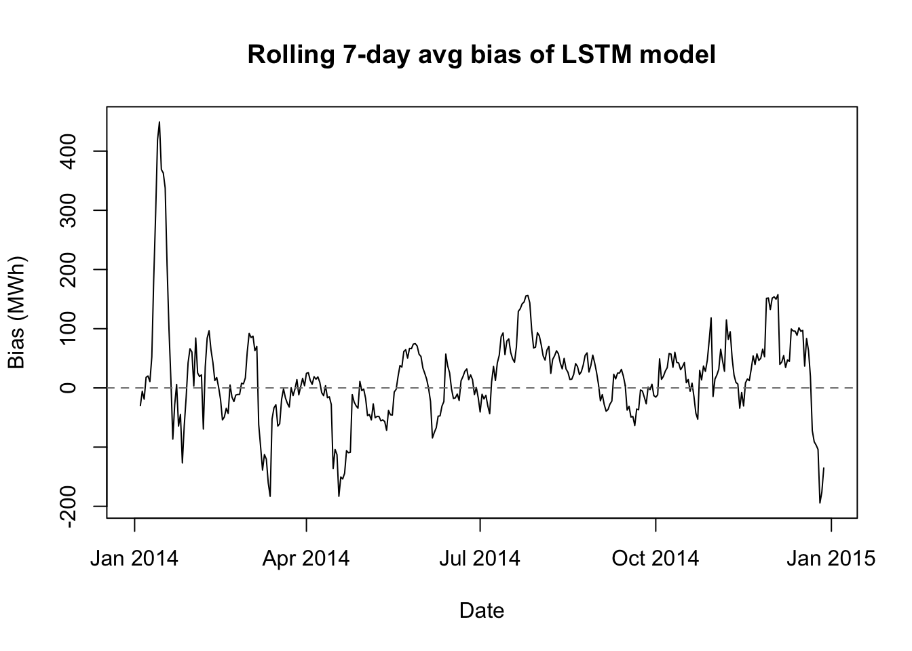

# 0. SETUP AND INITIAL EDA
# 0.1 bring in data and packages
#install.packages('tsibbledata') #for data
#install.packages('zoo') #for rollapply function
#install.packages('dplyr') #for lag function
#install.packages('xgboost') #for gradient boosted trees
#install.packages('keras3') #for lstms
require(tsibbledata)
require(zoo)
require(dplyr)
require(xgboost)
require(keras3)ML case study in R
The southern Australian state of Victoria is home to about 7 million people, including the greater Melbourne metropolitan area, somewhat similar in population to the Chicagoland area.
After decades of privatization, Victoria is reasserting state control over their electrical grid. Somewhere, someone is going to have to put together an operational plan for supplying power to the entire state, and that plan will have to involve a forecast of total energy demand: week by week, day by day, and hour by hour.
If that person were you, how would you do it?
Case study goals and EDA
This longer case study will try to present some real deployment challenges (and success strategies) as we try to imagine how we might forecast Victoria’s electricity demand, were it our job. I don’t have up-to-date demand numbers electrical grid, but a three-year dataset of half-hourly demand from 2012–2014 is available through the tsibbledata package:
summary(vic_elec)
head(vic_elec) Time Demand Temperature
Min. :2012-01-01 00:00:00 Min. :2858 Min. : 1.50
1st Qu.:2012-09-30 22:52:30 1st Qu.:3969 1st Qu.:12.30
Median :2013-07-01 22:45:00 Median :4635 Median :15.40
Mean :2013-07-01 22:45:00 Mean :4665 Mean :16.27
3rd Qu.:2014-04-01 23:37:30 3rd Qu.:5244 3rd Qu.:19.40
Max. :2014-12-31 23:30:00 Max. :9345 Max. :43.20
Date Holiday
Min. :2012-01-01 Mode :logical
1st Qu.:2012-09-30 FALSE:51120
Median :2013-07-01 TRUE :1488
Mean :2013-07-01
3rd Qu.:2014-04-01
Max. :2014-12-31
# A tibble: 6 × 5
Time Demand Temperature Date Holiday
<dttm> <dbl> <dbl> <date> <lgl>
1 2012-01-01 00:00:00 4383. 21.4 2012-01-01 TRUE
2 2012-01-01 00:30:00 4263. 21.0 2012-01-01 TRUE
3 2012-01-01 01:00:00 4049. 20.7 2012-01-01 TRUE
4 2012-01-01 01:30:00 3878. 20.6 2012-01-01 TRUE
5 2012-01-01 02:00:00 4036. 20.4 2012-01-01 TRUE
6 2012-01-01 02:30:00 3866. 20.2 2012-01-01 TRUE Scenario: It’s December 31st, 2013. We have two years of pst historical demand data for Victoria’s electrical grid (2012 and 2013). We have been asked to provide daily estimates of electrical demand, at midnight, for each of the next 365 days.
Objectives: We want to ensure daily demand is well-understood so that power plants and other power-generating facilities know when to run and how much power to produce.
Overestimating demand generates waste (at least AUD 50 per megawatt-hour) in unnecessarily-produced electricity, as well as add-on effects such as employee wages, maintenance costs, equipment wear, opportunity costs, etc.
Underestimating demand can be even worse: brownouts or blackouts might disrupt residential and commercial needs, and emergency power may need to be purchased from neighboring electrical grids at great expense (at least AUD 300 per MWh).
Sticking point: How can we know on December 31st, 2013, that we have a forecasting strategy which will be robust to whatever 2014 brings?
Electrical demand shows clear daily seasonality and weekly seasonality. The daily seasonality comes both from temperature changes over the course of the day as well as changes in human use of electrical equipment throughout the day. The weekly seasonality comes from human use patterns as well, since office buildings and other employment sites are generally only lit and in use during the workweek:
weekplot <- function(w){
plot(x=1:336,y=vic_elec$Demand[336*w-335:0],
ylim=c(3400,8000),xlab=NA,ylab='MWh',xaxt='n',lwd=2,type='l',
main=paste('Demand in 2012 Week',w))
axis(side=1,at=1+48*(0:6),labels=c('Su','M','T','W','Th','F','Sa'))}
par(mfrow=c(2,2),mar=c(3,4,3,1)+0.1)
sapply(1:4,weekplot)
However, the graphs above (from early 2012) show that the demand pattern is not identical day-to-day or week-to-week. Week 2 shows a very regular pattern like we might expect, with Monday–Friday having very similar demand and both Sunday and Saturday showing somwehat less demand. But other weeks show a very different pattern. It might be difficult to forecast this series with a fixed set of daily or hourly coefficients.
One of the largest factors affecting electricity demand is temperature. Cold days require the use of residential, commercial, and industrial heating equipment. Hot days require the use of residential, commercial, and industrial cooling equipment. Heating the indoor spaces for 7 million people from 5°C (42°F) to room temperature requires an enormous amount of power, as does cooling the indoor spaces for 7 million people from 33°C (92°F).1
plot(vic_elec$Demand~factor(round(vic_elec$Temperature)),
xlab='Degrees C',ylab='Demand in MWh',
main='Power Demand vs Temperature, 2012-2014')
(Here I should remind the reader: in Australia, January is a summer month and July is a winter month.)
We’ll need to treat temperature carefully. The power needed to heat or cool Victoria is not linear with temperature; every extra degree away from a comfortable range takes more power to heat or cool away than the last one. Some amount of demand will only be seen when it’s hot, other types of demand will only be seen when it’s cool.
monthlydemand <- tapply(vic_elec$Demand,
list(format(vic_elec$Time,'%H:%M'),format(vic_elec$Date,'%b')),
FUN=mean)[,c(5,4,8,1,9,7,6,2,12,11,10,3)]
matplot(x=1:48,y=monthlydemand,xaxt='n',
type='l',lwd=2,lty=1,pch=NA,ylab='Demand (MWh)',xlab='Hour',
main='Half-hourly average demand by month',
col=colorRampPalette(c('#ff0000','#0000ff','#ff0000'))(13),)
axis(side=1,at=1:48,labels=format(vic_elec$Time[1:48],'%H:%M'))
legend(x='bottomright',legend=c('January','July'),
lwd=2,col=c('#ff0000','#0000ff'),bty='n')
Preparing for deployable forecasting
In school, we often approach data analyses as one-off assignments which will never be revisited, and which only need to be understood by ourselves and potentially a grader. Successful professional-level data analyses require a different set of skills and standards.
One of those skills is templatizing your code into repeatable chunks which can be extended to multiple related problems. This could mean writing new object classes, or a library of helper functions, or entire scripts imported into new projects. Templatization brings several benefits:
In the long run, it should save you time.2
It should help others to better understand, run, and adapt your code.3
You will make fewer outright errors because once you develop working tools, you will stop rebuilding them, and thereby eliminate possibly erroneous labor.
You will solve all similar problems in exactly the same way, meaning that their results will be more directly comprable, and less likely to introduce ambiguity through inconsistency (which is not necessarily error, but can create errors in use and interpretation).
The actual code quality of the functions which follow is… not great. But it would be irresponsible to ever attempt something as serious as our scenario without taking this approach to building our codebase.
# 0.2 add weekend feature
elec <- as.data.frame(vic_elec)
elec$Weekend <- pmax(1*(weekdays(vic_elec$Date) %in%
c('Saturday','Sunday')) - vic_elec$Holiday,0)
# 0.3 split into train (2012-13) and test (2014) and a stress-test
train <- which(strftime(elec$Date,format='%Y')<'2014')
test <- which(strftime(elec$Date,format='%Y')=='2014')
T1 <- max(train)
T2 <- max(test)
n1 <- length(train)
n2 <- length(test)
maxtemps <- rollapply(elec$Temperature[test],width=48,max,by=48)
hotdays <- order(maxtemps,decreasing=TRUE)[1:10]
hotobs <- c(sapply(hotdays,function(z) test[48*z-(47:0)]))
# 0.4 helper functions
# rmse -- calculates generic root mean squared error
# ins.rmse -- rmse for demand in train period
# oos.rmse -- rmse for demand in test period
# hot.rmse -- rmse for demand during hottest 10 test days
rmse <- function(preds,actual){
sqrt(mean((actual-preds)^2,na.rm=TRUE))}
ins.rmse <- function(preds) rmse(preds,elec$Demand[train])
oos.rmse <- function(preds) rmse(preds,elec$Demand[test])
hot.rmse <- function(preds){
rmse(preds[hotobs-T1],elec$Demand[hotobs])}
# cost -- total cost in mispredicted demand for test period
cost <- function(preds,actual=elec$Demand[test]){
e <- actual-preds
sum(ifelse(e>0,150*e,-25*e))}
# all.features -- creates lags and features from raw data
all.features <- data.frame(
Temp=elec$Temperature,
Temp2=elec$Temperature^2,
Weekend=elec$Weekend,
Holiday=elec$Holiday,
TempWarm=pmax(elec$Temperature-20,0),
TempCool=pmax(20-elec$Temperature,0),
TempXDemL48=elec$Temperature*lag(elec$Demand,48), #7
Trend=(1:dim(elec)[1])/(365*48),
TrigD1=cos(2*pi*(1:dim(elec)[1])/48),
TrigD2=sin(2*pi*(1:dim(elec)[1])/48),
TrigW1=cos(2*pi*(1:dim(elec)[1])/336),
TrigW2=sin(2*pi*(1:dim(elec)[1])/336), #12
Demand_L1=lag(elec$Demand),
Demand_L2=lag(elec$Demand,2),
Demand_L48=lag(elec$Demand,48),
Demand_L49=lag(elec$Demand,49),
Demand_L336=lag(elec$Demand,336),
Demand_L337=lag(elec$Demand,337),
Temp_L1=lag(elec$Temperature),
Temp_L48=lag(elec$Temperature,48),
Temp2_L1=lag(elec$Temperature^2),
Temp2_L48=lag(elec$Temperature^2,48), #22
FutureMin=c(rollapply(elec$Temperature,width=48,min)[-1],rep(NA,48)),
FutureMax=c(rollapply(elec$Temperature,width=48,max)[-1],rep(NA,48)),
FutureMean=c(rollapply(elec$Temperature,width=48,mean)[-1],rep(NA,48)),
FutureSlope=c(rollapply(elec$Temperature,width=48,
function(z) cov(1:48,z)/var(1:48))[-1],rep(NA,48))) #26
# year_test -- loops through weekly refitting and daily forecasting
year_test <- function(model.func,predict.func,h=1){
preds <- vector(mode='numeric',length=0)
for (w in 1:53){
idx <- T1+(w-1)*336
model.obj <- model.func(idx)
maxd <- ifelse(w==53,0,6)
week.preds <- sapply(idx+48*(0:maxd),predict.func,model.obj=model.obj)
preds <- c(preds,c(week.preds))}
preds}
## biasplot -- shows when predictions were too high or low
biasplot <- function(preds,label){
bias <- elec$Demand[test]-preds
roll.bias.ma7 <- c(NA,NA,NA,
rollapply(bias,width=336,by=48,mean,na.rm=TRUE),
NA,NA,NA)
plot(unique(elec$Date[test]),roll.bias.ma7,type='l',
xlab='Date',ylab='Bias (MWh)',
main=paste('Rolling 7-day avg bias of',label))
abline(h=0,lty=2,col='grey50')}A more proper set of helper functions would come with their own documentation, but if you read between the lines of the year_test function, you’ll see that it expects two other types of function not listed here, which we will build separately for each model type:
A model-making function, referred to here as the argument
model.func(though of course the real function might be called anything), which takes in just one arguments,idx(the row number of the last training observation), and outputs a model object referred to here asmodel.obj.A forecasting function, referred to here as the argument
predict.func, which takes in a fitted model object and the row number of the last observation before the forecasting window, and outputs a vector of demand predictions.4
Null model
Before we begin with more sophisticated modeling, we should always keep a null model around as a benchmark. In this case, given the strong daily and weekly seasonality of the data, there’s an argument that both the naive model (\(\hat{y}_t = y_{t-1}\)) or the seasonal naive model (\(\hat{y}_t = y_{t-48}\)) could produce good results.
However, in our scenario of forecasting power for a full 24-hour period, we will not be able to implement the naive model, since at midnight we would not know \(y_{00:30}\) in order to predict \(y_{01:00}\) and so on. So by default we will pick the seasonal naive model:
# 1. NULL MODEL
# 1.1 compile model metrics and examine bias
naive.preds <- lag(elec$Demand,48)[test]
(naive.metrics <- round(c(
ins.rmse=ins.rmse(lag(elec$Demand,48)[train]),
oos.rmse=oos.rmse(naive.preds),
hot.rmse=hot.rmse(naive.preds),
cost.mm=cost(naive.preds)/1e6),0))ins.rmse oos.rmse hot.rmse cost.mm
570 571 1106 563 biasplot(naive.preds,'Null model')
We see here some of the economy offered by our helper functions. We also see that the seasonal naive model (which I will also call the null model) is an impressive start. Our out-of-sample RMSE is almost identical to our in-sample RMSE, meaning that there’s no overfitting. The bias plot shows that the model provides good-not-great predictions almost everywhere, though the performance is about twice as bad on the hottest days.
If we had never taken a data science or statistics course in our life, we could reach this conclusion. Let’s stay humble as we try new approches, since our incremental value to the electric commission may be less than we thought.
Autoregressive distributed lag (ADL) model
Let’s add an earlier statistical model to the mix, as a parametric alternative to the machine learning models we might try next.
An autoregressive distributed lag model might be a good fit to our data for several reasons:
Our data has both time series properties as well as significant associations with external regressors (which rules out purely univariate techniques like ARIMA).
Our data shows more “AR” than “MA” behavior, both conceptually and empirically (which suggests against (dynamic regression).
The “AR” behavior in our data is not just a second-order residual disturbance, but rather structural changes in the true mean of our data (which also suggests against dynamic regression).
The external regressors are not in themselves a target for forecasting and are viewed as exogenous or deterministic influences (which rules out VARs).
# 2 AUTOREGRESSIVE DISTRIBUTED LAG (ADL) MODEL
# 2.1 create model and prediction functions
adl.fit <- function(idx,days=365){
training.ids <- (idx-days*48+1):idx
x <- all.features[training.ids,c(1:4,13:22)]
y <- elec$Demand[training.ids]
lm(y ~ ., data=x)}
adl.pred <- function(idx,model.obj){
xtest <- all.features[idx+1:48,c(1:7,13:22)]
preds <- predict.lm(model.obj,newdata=xtest[1,])
for (i in 2:48){
xtest$Demand_L1[i] <- preds[i-1]
if (i>2) {xtest$Demand_L2[i] <- preds[i-2]}
preds[i] <- predict.lm(model.obj,newdata=xtest[i,])}
preds}We will make a modeling function which uses only a subset of the total feature list:
- Current Temperature
- Lags 1 and 48 of Temperature
- Current Temperature2 (to approximate nonlinear effects)
- Lags 1 and 48 of Temperature2
- Lags 1, 2, 48, 49, 336, and 337 of Demand (to capture AR and multiseasonal AR behavior)
Our prediction function will make a single lookahead prediction for the 00:30 time slot, and then use this prediction to modify the 01:00 time slot’s “Lag 1 Temperature” feature, and continue on in this way to forecast the entire day.
One tweak which would be more honest to our scenario would be to add noise/error to the future temperature data… I have not done so here because 24 hour forecasts of weather are now quite accurate, generally to within 1–1.5°C. If we make this modeling choice for all models or no models, then it should not greatly affect our assessment of their relative performance.
# 2.2 train on historical data and examine residuals
adl.train.mod <- adl.fit(idx=T1,days=(366+365))
summary(adl.train.mod)
Call:
lm(formula = y ~ ., data = x)
Residuals:
Min 1Q Median 3Q Max
-320.16 -23.66 -0.39 23.45 406.35
Coefficients:
Estimate Std. Error t value Pr(>|t|)
(Intercept) 53.562750 2.845093 18.83 <2e-16 ***
Temp -48.698693 1.212975 -40.15 <2e-16 ***
Temp2 1.369955 0.029818 45.94 <2e-16 ***
Weekend -10.302870 0.641129 -16.07 <2e-16 ***
HolidayTRUE -17.770021 1.582242 -11.23 <2e-16 ***
Demand_L1 1.154831 0.002388 483.51 <2e-16 ***
Demand_L2 -0.174324 0.002324 -75.00 <2e-16 ***
Demand_L48 0.346041 0.003350 103.28 <2e-16 ***
Demand_L49 -0.339991 0.003335 -101.94 <2e-16 ***
Demand_L336 0.493842 0.003456 142.91 <2e-16 ***
Demand_L337 -0.489245 0.003470 -141.01 <2e-16 ***
Temp_L1 44.514617 1.220875 36.46 <2e-16 ***
Temp_L48 2.854446 0.253379 11.27 <2e-16 ***
Temp2_L1 -1.236025 0.030057 -41.12 <2e-16 ***
Temp2_L48 -0.090157 0.006342 -14.21 <2e-16 ***
---
Signif. codes: 0 '***' 0.001 '**' 0.01 '*' 0.05 '.' 0.1 ' ' 1
Residual standard error: 44.25 on 34736 degrees of freedom
(337 observations deleted due to missingness)
Multiple R-squared: 0.9974, Adjusted R-squared: 0.9974
F-statistic: 9.575e+05 on 14 and 34736 DF, p-value: < 2.2e-16par(mfrow=c(2,2),mar=c(2,4,3,2)+0.1)
plot(elec$Date[train][-1:-337],adl.train.mod$residuals,
main='Training residuals over time',
xlab='Date',ylab='Residual (MWh)',cex.main=0.75)
plot(density(adl.train.mod$residuals),
main='Estimated density of training residuals',
xlab='Residual (MWh)',cex.main=0.75)
plot(elec$Temperature[train][-1:-337],adl.train.mod$residuals,
main='Training residuals vs. temperatures',
xlab='Temperature (C)',ylab='Residual (MWh)',cex.main=0.75)
acf(adl.train.mod$residuals,
main='ACF plot of training residuals',
xlab='Residual (MWh)',cex.main=0.75)
This is as good a result as we could have hoped for! R2 of 99.74%, all predictors found to be highly significant, mostly clean-looking residuals… honestly, the fit surprises me.
However, in our scenario what counts is not our in-sample explanatory power, but our out-of-sample forecasting strength:
# 3.3 compile model metrics and examine bias
adl.preds <- year_test(adl.fit,adl.pred) #15s
adl.metrics <- round(c(
ins.rmse=ins.rmse(c(rep(NA,337),predict(adl.train.mod))),
oos.rmse=oos.rmse(adl.preds),
hot.rmse=hot.rmse(adl.preds),
cost.mm=cost(adl.preds)/1e6),0)
rbind(naive=naive.metrics,adl=adl.metrics) ins.rmse oos.rmse hot.rmse cost.mm
naive 570 571 1106 563
adl 44 337 725 301biasplot(adl.preds,'ADL model')
Our ADL model does indeed beat the null model for our 2014 test scenario. The in-sample RMSE is ridiculously low, but as mentioned before, that hardly matters. Much more importantly, the out-of-sample RMSE, the stress-test RMSE, and the actual estimated organizational cost are all about 30% lower when using our ADL model than when using the null model. (Perhaps our degrees really do count for something?)
Gradient boosted trees (GBT)
Let’s say we had not learned about ADL models, or let’s say that we prefer instead to use machine learning models for this problem. One model type we could explore is a gradient-boosted tree.
I presume the reader’s familiarity with gradient-boosted trees, but this introduction from the xgboost package documentation might provide a helpful review.
GBTs might be another good fit for our data. Instead of one or two seasonal patterns, and one or two temperature relationships, it looks like our data have many different patterns and relationships with the regressors which are used in a specific settings (e.g. a heat wave in winter produces different effects than a heat wave in summer, and not every holiday produces the same demand pattern.)
We will start by creating a fitting function and a forecasting function, just as we did for ADL models. One major change is that we will adopt a direct forecasting strategy rather than recursive strategy:
Each week, we will train 48 different models based on the past year’s worth of demand data. The first model will use the historical sample to optimize 1-ahead prediction, the second model will optimize 2-ahead prediction, and so on.
On each day of the week, we will apply the 48 pre-trained models to the most recent observation (from 23:30 the previous night). Together, they will examine the same data point and produce 48 separate estimates, one for each of the next 48 half-hourly periods.
Because we will not be going forward in time, we normally would lose all the information about future temperatures which was used by the recursive ADL predictions. However, we can add summary information about the predicted temperature forecast to each observation, which will now carry a mix of past, present, and future (forecasted) information.
# 4 GRADIENT BOOSTED TREES
set.seed(0302)
# 4.1 create model and prediction functions
gbt.fit <- function(idx,days=365,
max.depth=6,learning_rate=0.05,min_child_weight=5){
training.ids <- (idx-(days+1)*48+1):(idx-48)
x <- all.features[training.ids,]
lapply(1:48,FUN=function(z)
xgboost(x=x,y=elec$Demand[training.ids+z],
max_depth=max.depth,learning_rate=learning_rate,
min_child_weight=min_child_weight,
subsample=0.8,colsample_bytree=0.8,reg_lambda=1,
reg_alpha=0.5,nrounds=500,early_stopping_rounds=50))}
gbt.pred <- function(idx,model.obj){
xtest <- all.features[idx,]
unlist(lapply(model.obj,function(z) predict(z,newdata=xtest)))}The GBT model-fitting function above uses the popular xgboost package (similar to its corresponding Python library). We face an immediate dilemma: none of these models are likely to work very well using only their default settings, but we do not have the time to optimize 15 different parameters. We may compromise by performing a simple grid search over three of the most important hyperparameters:
max.depth, which controls how deep any tree can get (4, 6, or 8 nodes). Higher values learn richer local behavior but often overfit.learning_rate, which assigns a weight to the residual in each tree’s gradient “boost” (0.03, 0.05, or 0.10). Higher values learn faster and more accurately but often overfit.min_child_weight, which controls how many observations are needed in each “leaf” of a tree (1 or 5). Higher values result in less localization and possibly less overfitting.
Since these parameters are chosen to minimize overfitting, we cannot judge the best values from an in-sample prediction. We will reduce the training set to January 2012 – June 2013, and use the July 2013 – December 2013 dates as a validation set for our hyperparameter tuning. All choices here involve tradeoffs, but this validation set at least contains both summer and winter days in equal measure.
# 4.1 tune hyperparameters for 24h-predictions in H2 2013
hyperparams <- as.matrix(expand.grid(
max_depth=c(4,6,8),
learning_rate=c(0.03,0.05,0.10),
min_child_weight=c(1,5)))
gbt.tune <- function(pars){
model <- gbt.fit(idx=T1-180*48,days=(185+366-7),
max.depth=pars[1],learning_rate=pars[2],min_child_weight=pars[3])
test.ids <- T1-seq(180,6,-6)*48
preds <- gbt.pred(test.ids,model)
rmse(preds,elec$Demand[c(sapply(test.ids,function(z){z+1:48}))])}
#tuning.results <- apply(hyperparams,1,gbt.tune) #!CAREFUL! about 30m
#saveRDS(tuning.results,'gbttuning.RDS')
cbind(hyperparams,val.rmse=readRDS('gbttuning.RDS')) max_depth learning_rate min_child_weight val.rmse
[1,] 4 0.03 1 1211.644
[2,] 6 0.03 1 1204.345
[3,] 8 0.03 1 1199.285
[4,] 4 0.05 1 1216.495
[5,] 6 0.05 1 1205.487
[6,] 8 0.05 1 1200.707
[7,] 4 0.10 1 1217.782
[8,] 6 0.10 1 1206.522
[9,] 8 0.10 1 1201.532
[10,] 4 0.03 5 1210.175
[11,] 6 0.03 5 1206.693
[12,] 8 0.03 5 1200.039
[13,] 4 0.05 5 1214.473
[14,] 6 0.05 5 1202.782
[15,] 8 0.05 5 1199.811
[16,] 4 0.10 5 1218.471
[17,] 6 0.10 5 1204.358
[18,] 8 0.10 5 1198.028gbt.train.mod <- gbt.fit(idx=T1, days=(365+366-7))
gbt.train.preds <- sapply(seq(7*48,T1,48),
gbt.pred,model.obj=gbt.train.mod)
# 4.2 forecast 2014 in direct 24-hour blocks
#gbt.preds <- year_test(gbt.fit,gbt.pred) #!WARNING! 2r30m runtime
#saveRDS(gbt.preds,'gbtpreds.RDS')
gbt.preds <- readRDS('gbtpreds.RDS')
# 4.3 compile model metrics and examine bias
gbt.metrics <- round(c(
ins.rmse=ins.rmse(c(rep(NA,6*48),gbt.train.preds)),
oos.rmse=oos.rmse(gbt.preds),
hot.rmse=hot.rmse(gbt.preds),
cost.mm=cost(gbt.preds)/1e6),0)
rbind(naive=naive.metrics,
adl=adl.metrics,
gbt=gbt.metrics) ins.rmse oos.rmse hot.rmse cost.mm
naive 570 571 1106 563
adl 44 337 725 301
gbt 552 299 807 290biasplot(gbt.preds,'GBT model')
Long-short term memory (LSTM) models
Let’s add a fourth model to the mix: long-short term memory (LSTM) model. LSTMs are a form of recurrant neural network (RNN), and they allow us to capture certain signals from the past “states” of the system and allow them to be fed into future states with little or no signal attenuation (weakening). RNNs themselves allow current information to be passed to future periods, and LSTMs take this further by allowing for explicit “gate” controls which determine how mcuh signal to forget, how much signal to pass on, and how much signal to process in the current step.
Basic feed-forward neural networks such as multilayer perceptrons (MLP) are not often used in time series analysis because they have no concept of the sequencing of the data. Lags are passed as features to predict a current state, but little to no model architecture links the prediction of one current state to the prediction for the next.
RNNs offer a major upgrade by passing the processed signal from one state prediction into the inputs of the next. However, the fitting algorithms for these RNNs often damp the signal significantly after only a few states, meaning that vanilla RNNs would be particularly unsuited for our electricity demand data, where information from 48, 96, or even 336 prior states can be richly informative of the current state.
The LSTM architecture is perhaps even more complex than that of gradient-boosted trees, but in some ways it actually requires less tuning. This is partly due to the excellent work that the authors of the keras3 package have done to embed validation procedures directly into the model-fitting functions, but also results from the nature of neural networks themselves. Neural nets “break” less easily than gradient-boosted trees, because they cannot hyperlocalize the estimates in the same way. In general, with some sensible default choices you can expect an LSTM to improve with more and more computing resources (more epochs, smaller blocks, more units, more layers), but you may hit your resource limit before the network has reached its full potential.
# 5 LSTM
# 5.1 initialize params and seeds
set.seed(0303)
L <- 168 #lookback period
H <- 48 #lookahead (forecasting) period
p <- 12 #columns of predictive features
dropout_rate <- 0.2
learning_rate <- 0.002
batch_size <- 64
epochs <- 15
idx.2013 <- (366*48+1):((366+365)*48)
lstm.data <- cbind(elec$Demand,all.features[,c(1,3,4,9:12,23:26)])
lstm.means <- apply(lstm.data[idx.2013,c(1,2,9:12)],2,mean)
lstm.sds <- apply(lstm.data[idx.2013,c(1,2,9:12)],2,sd)
lstm.data[,c(1,2,9:12)] <- scale(lstm.data[,c(1,2,9:12)],
center=lstm.means,scale=lstm.sds)
lstm.data <- as.matrix(lstm.data)
lstm.fit <- function(idx,days=365){
print(elec$Date[idx])
model <- keras_model_sequential()
model$add(layer_input(shape = c(L, p)))
model$add(layer_lstm(units=32))
model$add(layer_dense(units=32,activation='relu'))
model$add(layer_dense(units=H))
model$compile(
optimizer = optimizer_adam(),
loss = "mse",
metrics = list("mae"))
X <- array(NA, dim = c(days*48, L, p))
Y <- matrix(NA, nrow = days*48, ncol = H)
startindex <- idx-H-L-days*48
for (i in 1:(days*48)){
X[i, , ] <- lstm.data[startindex+i+0:(L-1),]
Y[i, ] <- lstm.data[startindex+i+L+0:(H-1),1]}
fit(model, x = X, y = Y,
epochs = epochs,batch_size = batch_size,
validation_split = 0.2,callbacks = list(
callback_early_stopping(
patience = 3,
restore_best_weights = TRUE)))
model}
lstm.pred <- function(idx,model.obj){
xtest <- array(NA, dim = c(1, L, p))
xtest[1, , ] <- lstm.data[(idx-L+1):idx,]
rawpreds <- c(t(predict(model.obj, xtest)))
rawpreds*lstm.sds[1]+lstm.means[1]}The code above describes a MIMO forecasting strategy for the neural network which exploits structures in the data we have not yet used. Until now, we have approached each 24-hour (48 observation day) as its own entity, whether we were forecasting recursively or directly.
But with this LSTM, we will pass 3.5-day long (168 half-hours) “panes” of data to the algorithm. Each 3.5-day “pane” will count as one training observation. The inputs to this MIMO forecast are the most recent 168 half-hours of demand activity, and the outputs are a vector of 48 forecasted electrical demands.
plot(x=c(1,528),y=c(0.5,7.5),type='n',xaxt='n',yaxt='n',
main='Diagram of LSTM rolling MIMO structure',
xlab='Original data row indices',ylab='LSTM observation')
axis(side=1,at=seq(48,528,48))
axis(side=2,at=1:7,labels=7:1)
abline(v=seq(48,480,48),lty=2,col='#7f7f7f')
rect(48*(0:6)+24.5,7:1-0.4,48*(0:6)+192.5,7:1+0.4,density=-1,
col=c(rep('#0000003f',5),rep('#7f00ff3f',2)),
border=c(rep('#000000',5),rep('#7f00ff',2)))
rect(48*(0:6)+192.5,7:1-0.4,48*(0:6)+240.5,7:1+0.4,density=-1,
col=c(rep('#0000ff3f',5),rep('#bf00003f',2)),
border=c(rep('#0000ff',5),rep('#bf0000',2)))
legend(x='topright',horiz=TRUE,bty='n',pch=15,xjust=1,cex=0.5,pt.cex=1,
col=c('#0000003f','#0000ff3f','#7f00ff3f','#bf00003f'),
legend=c('Training X','Training Y','Test X','Test Y'))
# 5.3 compile model metrics and examine bias
#lstm.preds <- year_test(lstm.fit,lstm.pred) #!WARNING! 2hr15m runtime
#saveRDS(lstm.preds,'lstmpreds.RDS')
lstm.preds <- readRDS('lstmpreds.RDS')
lstm.metrics <- round(c(
ins.rmse=NA,
oos.rmse=oos.rmse(lstm.preds),
hot.rmse=hot.rmse(lstm.preds),
cost.mm=cost(lstm.preds)/1e6),0)
rbind(naive=naive.metrics,
adl=adl.metrics,
gbt=gbt.metrics,
lstm=lstm.metrics) ins.rmse oos.rmse hot.rmse cost.mm
naive 570 571 1106 563
adl 44 337 725 301
gbt 552 299 807 290
lstm NA 275 719 304biasplot(lstm.preds,'LSTM model')
These are roughly the 1st and 99th percentile temperatures in the historical data↩︎
If you templatize reflexively and without thinking of the shape of future problems, the time savings may never materialize.↩︎
If you code only for yourself, as I am prone to do, you may still be unreadable to your peers. But at least they can quarantine your madness more easily.↩︎
Although the forecasting function itself can forecast for any arbitrary time horizon, the weekly/daily loops will only work if the output has length 48.↩︎